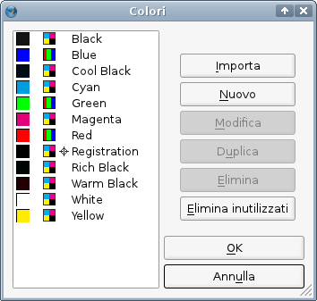
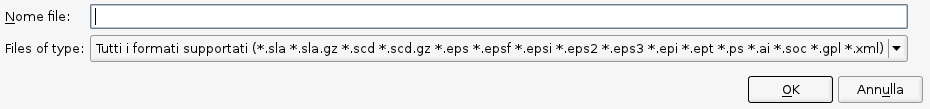

Questa è una breve introduzione alla finestra di dialogo Colori, che si apre con Modifica > Colori dal menù principale. Questa finestra ha due modalità di funzionamento. La prima, che forse già conoscete, si ha quando vi è un documento aperto, e viene spiegata in questa pagina della guida. Quando create e salvate un nuovo documento, tutti i colori presenti nella finestra di dialogo Modifica > Colori vengono salvati nel documento stesso (quindi, ciascun documento contiene il proprio insieme di colori). Questo è un particolare importante, perché significa che qualunque modifica a una raccolta colori influenza soltanto il documento corrente.
L'altra modalità di funzionamento di Modifica > Colori si ha quando non vi è alcun documento aperto. In questa situazione, potete modificare la raccolta colori predefinita o crearne una nuova. La selezione o la creazione di una nuova raccolta predefinita sarà spiegata in Gestire le raccolte di colori.
Se selezionate Modifica > Colori dal menù principale per la prima volta con un documento aperto, si apre la seguente finestra di dialogo:
|  | A sinistra è mostrato l'elenco dei colori nella raccolta colori predefinita selezionata, che è la “Scribus Basic”. L'elenco contiene per ciascun colore l'anteprima, l'indicatore del modello di colore e dei colori speciali (colori spot e di registrazione), e infine il nome del colore. Se la gestione del colore è attiva, potrebbe essere presente un indicatore di allarme tra l'anteprima e l'icona del modello di colore, e ciò indica che il colore è fuori gamma. A destra sono presenti diversi pulsanti per la modifica della raccolta colori: il primo è “Importa”. Quando lo si preme, si apre una finestra di dialogo per la selezione di un file da cui importare i colori. L'importazione può avvenire da un file di Scribus oppure da una raccolta colori in uno dei seguenti formati: Encapsulated PostScript (EPS), PostScript (PS), Adobe Illustrator (AI), OpenDocument Color Palettes (SOC) o GIMP Color Palettes (GPL). L'importazione di una raccolta di colori non sostituisce i colori esistenti; i colori importati sono aggiunti a quelli già presenti nella raccolta. |
|  | |
Dopo questa breve introduzione, possiamo passare alla modifica e aggiunta di colori (e forse anche ad ulteriori modifiche) nella nostra raccolta di colori. | |